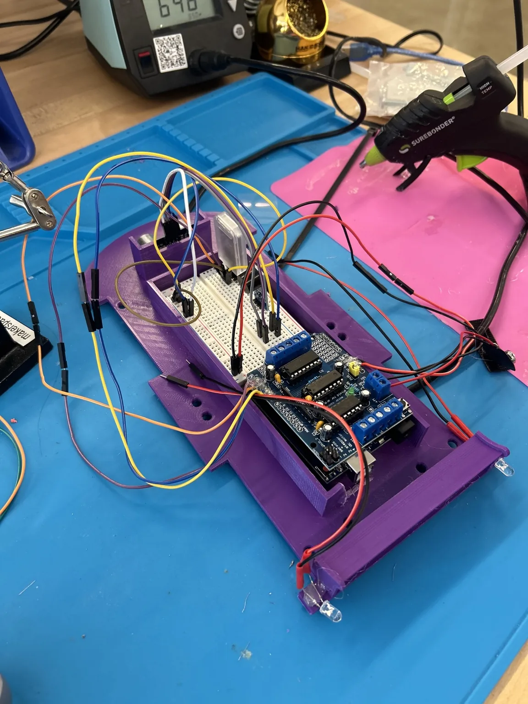
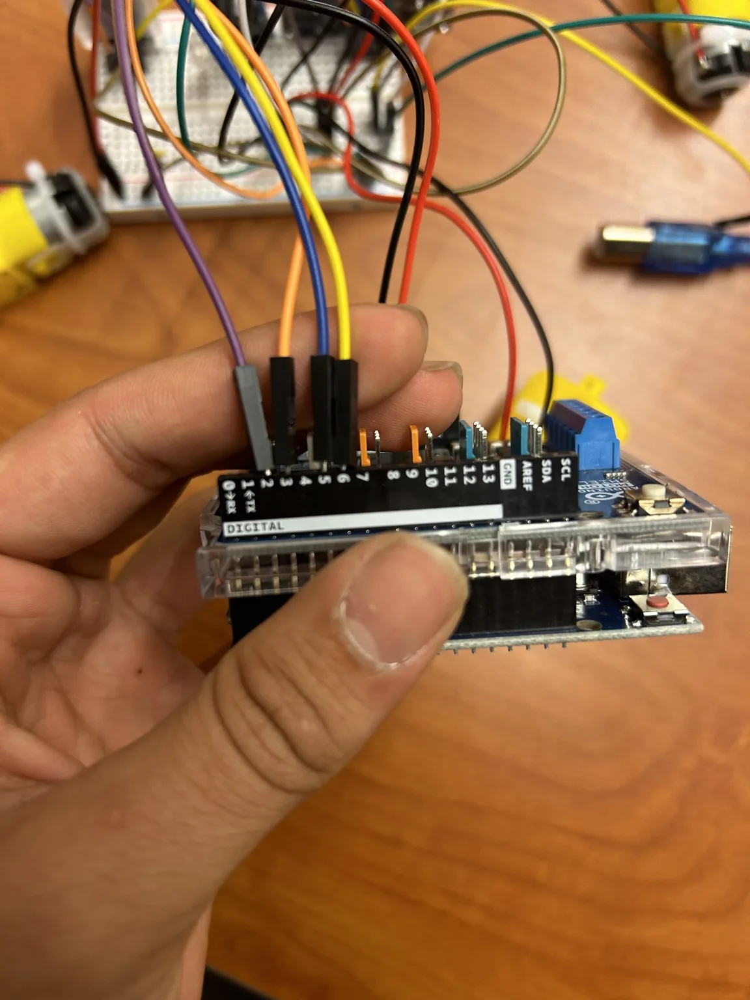
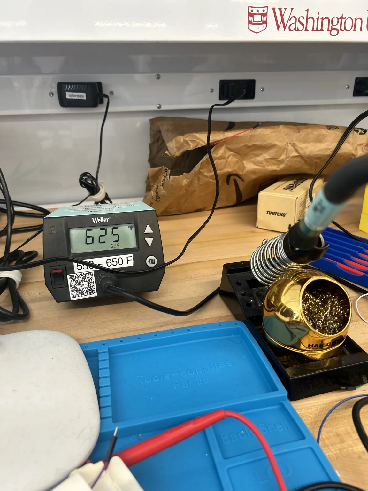
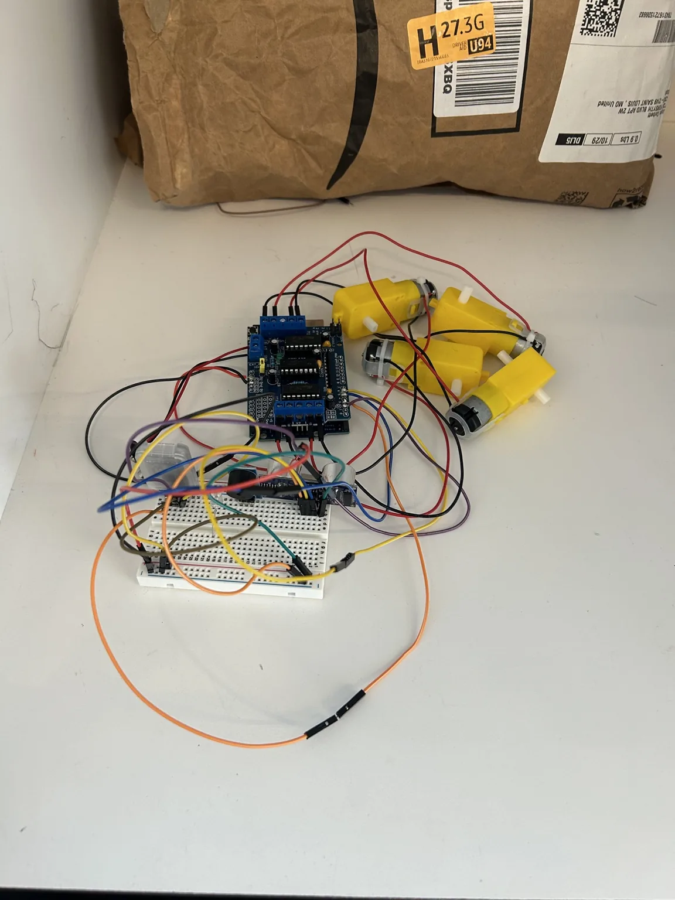
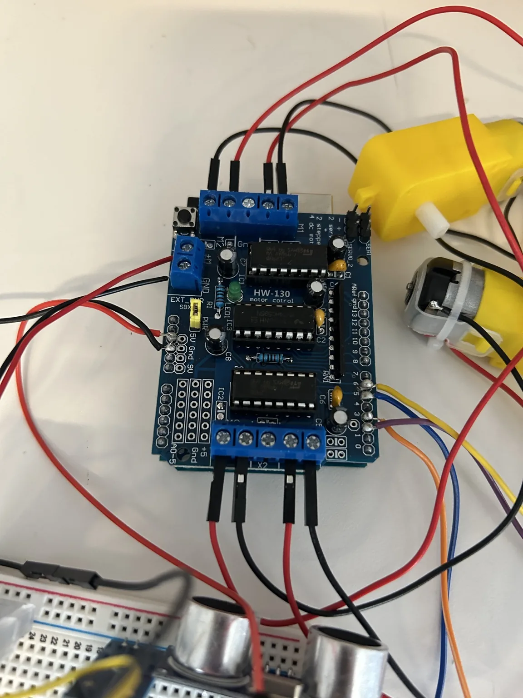

Circuits coursework · WashU
Arduino Circuit Car
Built an Arduino RC car combining motor control, lights, a horn, and ultrasonic distance sensing.
- Role
- Chief Engineer · Four-person team
- Context / status
- MEMS 2000 · Group project
- Tools & methods
- Arduino · Electronics · Controls
01
Overview
For MEMS 2000 Circuits at WashU, our four-person team built an Arduino RC car with motor control, flashing signal lights, an audio horn, and ultrasonic distance sensing. The project combined circuit assembly with embedded programming.

02
My contribution
As the team's Chief Engineer, I helped plan the system architecture and worked on assembly, programming, and troubleshooting. I programmed the car's functions in C++ using the Arduino IDE, soldered the connections to a central PCB, and crimped a modular wiring harness to connect the components.


03
Design & development
We connected the motors, lights, horn, and sensor through a central circuit board. I worked on the C++ control code, soldered connections, and crimped the wiring harness, troubleshooting electrical and software interfaces as the car came together.
Bench setup
The bench layout shows the motor-control board, four geared motors, and breadboard wiring before chassis integration.

Motor-control connections

04
Results & next steps
Our team integrated motor control, lighting, sound, and distance sensing in one Arduino car. My deliverables included embedded C++ code, soldered PCB connections, and a modular wiring harness.
A future revision would improve wiring documentation and test each function independently before full-system integration.